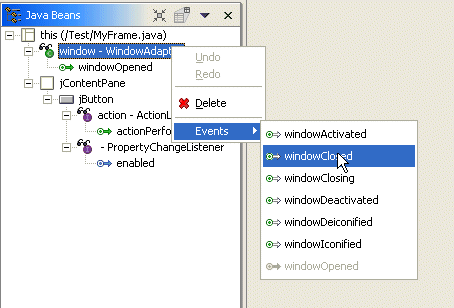

You can add an event to a component in the Design view or Java Beans view of the visual editor for Java.
- If you opened the Add Events window, you are presented with a list
of categorized events to choose from. Select the event that you want to add,
then click Finish.
- The Add Event dialog shows all of the available events for the component
in a tree. The tree shows the event listeners as the first level of entries,
and beneath each listener entry are the possible callbacks the event can raise.

- You can use the dialog to specify whether you want to create a new listener
or use an existing one. When the dialog opens, it analyzes the existing listeners,
and if it finds one that it believes can be re-used, it marks the listener
with a different icon. For existing listeners that extend an adapter class,
the icon is used, otherwise, the
 is used. Within the listener itself, existing events are shown with
a green arrow , and available events are shown with an incomplete arrow
is used. Within the listener itself, existing events are shown with
a green arrow , and available events are shown with an incomplete arrow - You can specify whether or not you want to use the existing listener or create a new one. When a new one is created, you can choose whether you want it to extend the adapter class or just implement the listener interface. If an option is not applicable, the radio buttons are disabled. For example, if there is no existing listener, or an existing listener is selected but the selected event is already used, the Use existing Listener is disabled. If there is no available adapter class for a new listener then the extends: ADAPTER_CLASS_NAME radio button is disabled.
- If you select propertyChange in the Add Event dialog, you have additional
options for adding the callback. A new listener can be created that can be
added to the JavaBean using the method a addPropertyChange(PropertyChangeListener
listener). If this occurs then the listener's generic callback method propertyChange(PropertyChangeEvent
event) is used for all property events. On some JavaBeans (such
as Swing components) the two argument method addPropertyChange(String
propertyName, PropertyChangeListener listener) is available and selected
by default to use for the new listener.

A listener that is added using the two argument method is specific to a particular property, so it cannot be reused for another property. A listener added with a single argument method has an if statement that checks the name of the property before processing the logic for each property callback as shown in the following code:
javaBean.addPropertyChangeListener(new java.beans.PropertyChangeListener() { public void propertyChange(java.beans.PropertyChangeEvent e) { if ((e.getPropertyName().equals("font"))) { System.out.println("propertyChange(font)"); } } });This allows a PropertyChangeListener added with a single argument method to be used for more than one property ( by having multiple if{} blocks used ).
- The Add Event dialog shows all of the available events for the component
in a tree. The tree shows the event listeners as the first level of entries,
and beneath each listener entry are the possible callbacks the event can raise.
When you add an event, if there is an existing listener that can be used, then the callback method is added to it. Otherwise, a new listener is created. For an existing listener to be used, it must be an anonymous inner class on the JavaBean that implements the listener interface. It must have an empty method body for the callback method, or extend the adapter class. and have no existing method for the event callback being added. For a property, an existing PropertyChangeListener will be re-used if it is added to the JavaBean with the single argument method addPropertyChange(PropertyChangeListener listener). If it does not already have code, processing the property is added.
If there is no candidate existing listener onto which the callback method can be added, then a new listener is created. This will be an anonymous inner class, and if an adapter class has been defined for the event then the listener will extend this. Otherwise, it will implement the listener interface. After the event is added a stub method is created with a //TODO comment. The stub method is an indicator of the source code that will be executed when the event occurs, and you should then change this to perform your required behavior. The //TODO comment is displayed in the Tasks window, flagging incomplete methods. This is so that you can locate them later and remove the //TODO comment once the callback logic has been written.
In the previous example the windowOpened method already exists. If this is a listener that extends the adapter, the same listener will be re-used because it does not already have a windowClosed method . The method windowClosed(WindowEvent e) is added, and the method stub and //TODO comment added as shown here:
this.addWindowListener(new java.awt.event.WindowAdapter() {
public void windowClosed(java.awt.event.WindowEvent e) {
System.out.println("windowClosed()"); // TODO Auto-generated stub windowClosed()
}
public void windowOpened(java.awt.event.WindowEvent e) {
callExistingWindowOpenedLogic();
}
});
In expert mode, events can still be added to the JavaBean as shown previously, but they can also be added to a listener in the Java Beans tree. The Events menu shows all of the event callback methods on the listener, and any that are already used are disabled.

For a PropertyChangeListener the pop-up menu shows all of the bound properties on the JavaBean. If any are already used by the PropertyChangeListener then they are disabled.

A listener added with a single argument method has an if statement that checks the name of the property before processing the logic for each property callback as shown in the following code:
javaBean.addPropertyChangeListener(new java.beans.PropertyChangeListener() {
public void propertyChange(java.beans.PropertyChangeEvent e) {
if ((e.getPropertyName().equals("font"))) {
System.out.println("propertyChange(font)");
}
}
});
This allows a PropertyChangeListener added with a single argument method to be used for more than one property ( by having multiple if{} blocks used ), and when the second and subsequent property callback is added a new if{} blocks are added.
If the propertyChangeListener is added to the JavaBean using the two argument method addPropertyChangeListener(String propertyName, PropertyChangeListener listener) then it is specific to a particular property so cannot be re-used for another property. In this case all of the Events cascade menu children are disabled.